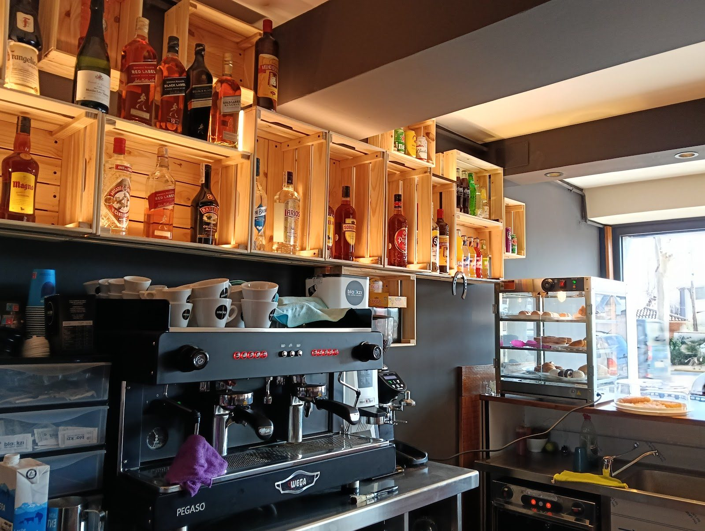

Vilanova i la Geltrú
El sabor de Brasil, cerca de casa
Pastel de feira recién hecho, coxinha de pollo y café brasileño. Cocina de calle de Brasil en un rincón de Vilanova, para matar el gusanillo o reencontrarse.
Qué hacemos
Cocina de calle brasileña
Lo que sale de la cocina es lo que se comía en las calles de Brasil: masa frita al momento, rellenos generosos y café de verdad.
Pastel de feira
La masa fina y crujiente del mercado brasileño, frita al momento.
Coxinha de pollo
La forma de muslo, rellena de pollo desmenuzado.
Caldo de caña
El zumo de caña recién exprimido, dulce y fresco.
Bolo de milho
Pastel de maíz, tierno y no demasiado dulce.
La carta
Qué vas a encontrar
Una carta corta, centrada en lo que hacen bien. Cambia según el día y lo que haya.
- Pastel de feira
- La masa fina y crujiente del mercado brasileño, frita al momento.
- Coxinha de pollo
- La forma de muslo, rellena de pollo desmenuzado.
- Caldo de caña
- El zumo de caña recién exprimido, dulce y fresco.
- Bolo de milho
- Pastel de maíz, tierno y no demasiado dulce.
- Café brasileño
- Café intenso, como se toma en Brasil.
- Coxinhac de yuca
- La versión de mandioca, para quien no come pollo.
Sin precios en esta página: pregunta por WhatsApp y te decimos qué hay hoy.
Opiniones
Qué dice quien ya ha comido
Extractos de opiniones publicadas en Google, la mayoría de clientes brasileños que reconocen el sabor de casa.
Atendimento gentil e são muito simpáticos. Comemos coxinha de frango com massa de mandioca e pastel frito de carne. Estava tudo bom e bem feito! Gostaria que tivessem coxinha tradicional com massa tradicional também para matar a vontade do sabor tradicional da coxinha brasileira. Um lugar que voltarei para matar a saudade da comida brasileira.
Pensa em um ambiente bom, cafezinho gostoso, pastel de feira MARAVILHOSO e muito grande (nunca conseguir terminar de comer kkkk) e um caldo de cana maravilhoso, também! Estou muito contente com este restaurante. Eles fazem tudo ao momento, coisa que é difícil de achar hoje em dia. As coisas são bem em conta. Não é caro. Na minha opinião, é até barato demais! A Elaine e a cozinheira, são um 1000/10! Estão de parabéns!
🇧🇷✨ Experiência incrível no Braspaña! O pastel de feira estava simplesmente perfeito — crocante por fora e recheio delicioso, igualzinho ao do Brasil! 😍 E o Pastel de costelinha… sem palavras, uma verdadeira delícia, cheio de sabor e bem servido! Comida que traz aquela nostalgia boa e mata a saudade de casa ❤️ Voltarei sempre, com certeza! #Braspaña #PastelDeFeira #ComidaBrasileira #SaborDoBrasil
Dónde estamos
Cómo llegar
Estamos en Vilanova i la Geltrú. Pregunta por WhatsApp y te decimos la dirección exacta y qué hay ese día.
- Dirección
08800 Vilanova i la Geltrú- Teléfono
- 667 34 01 75
- Plus Code
- 6PFJ+2H Vilanova i la Geltrú, Spain
El mapa solo se carga si aceptas las cookies de terceros.